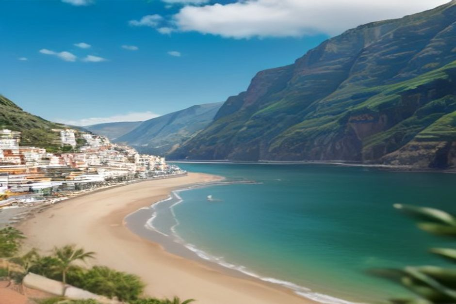
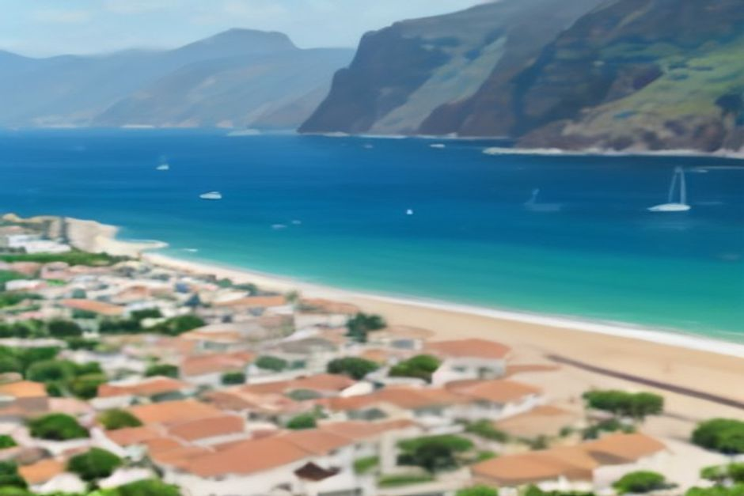

Wer „Ribeira Brava“ in die Suchmaschine tippt, will meist drei Dinge wissen: Wo liegt der Ort genau, lohnt sich der Halt, und kann man dort baden? Kurz gesagt: Ribeira Brava liegt an Madeiras Südküste, etwa 25 Autominuten westlich von Funchal. Für Kirche, Festung und Promenade genügt knapp eine Stunde. Und ja, es gibt einen Kiesstrand in einer geschützten Bucht. Dieser Guide sagt Ihnen, wie Sie hinkommen, was Sie vor Ort sehen und wann sich der Besuch am meisten lohnt.
Ribeira Brava auf einen Blick
- Lage: Südküste, an der Mündung des gleichnamigen Flusses, zwischen Câmara de Lobos und Ponta do Sol.
- Anfahrt ab Funchal: etwa 25 Minuten über die Schnellstraße VE4.
- Zeitbedarf: unter einer Stunde für Kirche, Festung und Promenade; mit Museum und Strand entsprechend mehr.
- Strand: dunkler Vulkankies, kein Sand, geschützte Bucht mit kleinem Wellenbrecher.
- Der Name: ribeira brava heißt „wilder Fluss“.
Anreise: mit dem Auto oder vom Wasser aus
Mit dem Mietwagen sind Sie von Funchal aus in rund 25 Minuten da. Der Ort ist der natürliche Mittelpunkt zwischen Câmara de Lobos und Ponta do Sol. Kurz hinter dem Dorf, hinter dem Tunnel der ER101, beginnt der dramatischere Küstenabschnitt in Richtung Calheta. Wer weiter nach Westen will, kommt hier ohnehin vorbei.
Auch auf dem Wasser liegt Ribeira Brava direkt auf der Strecke: Jedes Boot, das die Marina do Funchal Richtung Westen verlässt, fährt an dieser Küste entlang. Bei einer privaten Bootstour ist der Ort deshalb ein Etappenziel, kein eigener Ausflug. Dazu weiter unten mehr.

Lohnt sich Ribeira Brava?
Ja, aber als Stopp, nicht als Tagesziel. Der Ort wirkt noch wie ein echtes Dorf und nicht wie ein Ferienort. Die Promenade ist mit schwarz-weißer calçada gepflastert, am Samstag gibt es einen Markt, und über allem steht ein unverwechselbarer Kirchturm.
Ribeira Brava gehört zu den ältesten besiedelten Gemeinden der Insel. Von hier führen die Straßen über die Berge nach Serra de Água und Encumeada, lange bevor es die Tunnel gab, war das der Übergang von der Süd- zur Nordküste. Wenn Sie ohnehin an der Südküste unterwegs sind, ist der Ort ein angenehmer Halt für einen Kaffee und einen kurzen Rundgang.
Strand von Ribeira Brava: Kann man hier baden?
Ja. Der Strand liegt in einer Bucht, die ein Wellenbrecher schützt. Das Wasser ist hier meist ruhiger als an offeneren Abschnitten der Südküste. Wie fast überall auf Madeira gibt es keinen Sand: Der Strand besteht aus dunklem Vulkankies und Gestein. Barfuß geht es, mit Badeschuhen ist es angenehmer.
Am besten baden Sie von spätem Frühling bis frühem Herbst. Dann ist das Wasser am wärmsten, und die Bucht liegt im Sommer am ruhigsten. Ein klassischer Sandstrandtag wird es nicht, aber als kurzer Badestopp funktioniert die Bucht gut.
Die Igreja de São Bento: der Turm, den jeder fotografiert
Die Kirche gehört zu den ältesten Madeiras. Aus einer kleinen Kapelle des 15. Jahrhunderts wuchs das Gebäude des 16. Jahrhunderts, das noch heute steht. Im Inneren finden Sie manuelinische und barocke Details, einen dreischiffigen Raum und Kristalllüster.
Von außen fällt der Glockenturm auf: Sein Dach ist mit blau-weißen Kacheln gedeckt und von einem Planisphärium gekrönt. Keine andere Kirche der Insel hat eine solche Dachsilhouette. Die Kirche liegt mitten im Zentrum, nur einen kurzen Fußweg vom Strand entfernt. Rechnen Sie mit etwa einer Viertelstunde.
Weitere Sehenswürdigkeiten im Ort
- Forte de São Bento: eine kompakte Festung von 1708, Teil der damaligen Küstenverteidigung. Sie steht am Ufer und dient heute als Informationspunkt. Fünf Minuten genügen.
- Museu Etnográfico da Madeira: wenige Gehminuten landeinwärts, in einer alten Zuckerrohrschnaps-Destillerie. Es zeigt das ländliche Leben, den Weinbau und traditionelles Handwerk. Planen Sie eine halbe Stunde ein.
- Promenade, Markt und Cafés: der eigentliche Reiz des Ortes. Es gibt keine einzelne Hauptattraktion, es ist die Summe.

Ribeira Brava mit dem privaten Boot ab Funchal
Chifbay fährt ab der Marina do Funchal, Steg C. Das Boot gehört ganz Ihrer Gruppe, bis zu 5 Gäste, mit zwei lizenzierten Skippern aus Madeira. Die Preise gelten immer für das ganze Boot, nicht pro Person. Zwei Fahrten führen nach Ribeira Brava:
- Tagestour: Abfahrt um 10:00 oder 14:00. Die Route führt über Câmara de Lobos und Cabo Girão, mit Bade- und Paddleboard-Stopp an der Fajã dos Padres. Bis Ribeira Brava dauert die Tour 2 Std. 30 und kostet 500 €. Wer noch weiter möchte, fährt in 3 Std. bis Ponta do Sol (600 €), also 30 Minuten weiter nach Westen.
- Sonnenuntergangsfahrt: Abfahrt 1 Std. 15 vor Sonnenuntergang, das ganze Jahr über, ohne Badestopp. Bis Cabo Girão dauert sie 2 Std. (400 €), bis Ribeira Brava 2 Std. 30 (500 €). Mehr dazu auf der Seite zur Sonnenuntergangsfahrt.
An Bord sind Essen und Getränke inbegriffen, dazu ein Insta360-360°-Video, Drohnenaufnahmen (wenn das Wetter es erlaubt) und Fotos mit einer echten Kamera. Bis 24 Stunden vor Abfahrt können Sie kostenlos stornieren.
Der Reiz vom Wasser aus: Kirchturm und Festung zeigen sich aus einer ganz anderen Perspektive als von der Straße. Alle Details zu den Touren finden Sie unter Erlebnisse, einen Vergleich der Möglichkeiten auf der Seite Bootstouren auf Madeira. Praktische Fragen zu Treffpunkt und Ablauf beantwortet die Seite Praktische Infos.
Wann ist die beste Zeit für Ribeira Brava?
Zum Baden: spätes Frühjahr bis früher Herbst. Das Dorf selbst lohnt das ganze Jahr, denn Kirche, Festung und Promenade hängen nicht vom Wetter ab wie der Strand. Vormittags ist es meist ruhiger als nachmittags, bevor der Tagesverkehr auf der VE4 zunimmt. Wer mit dem Auto kommt, plant den Halt deshalb besser am Morgen.
Ein Besuch in Kürze: so planen Sie ihn
- Parken oder anlegen, dann zuerst zur Promenade und zum Forte de São Bento (5 Minuten).
- Weiter zur Igreja de São Bento (etwa 15 Minuten).
- Bei Zeit: Museu Etnográfico (etwa 30 Minuten) oder ein Kaffee am Ufer.
- Bei gutem Wetter ein Bad an der Kiesbucht, am besten mit Badeschuhen.
Die meisten Besucher fahren zweimal an Ribeira Brava vorbei, hin und zurück, ohne anzuhalten. Zehn Minuten am Wasser zeigen, warum das schade ist.
Ob Sie per Auto oder per Boot kommen: Ribeira Brava belohnt einen kurzen Halt mehr als viele andere Orte an dieser Küste. Ein echtes Dorf, eine wirklich alte Kirche und eine Bucht, in der man ohne großen Aufwand ins Wasser kommt. Weitere Ideen finden Sie im Journal, Stimmen früherer Gäste unter Bewertungen.